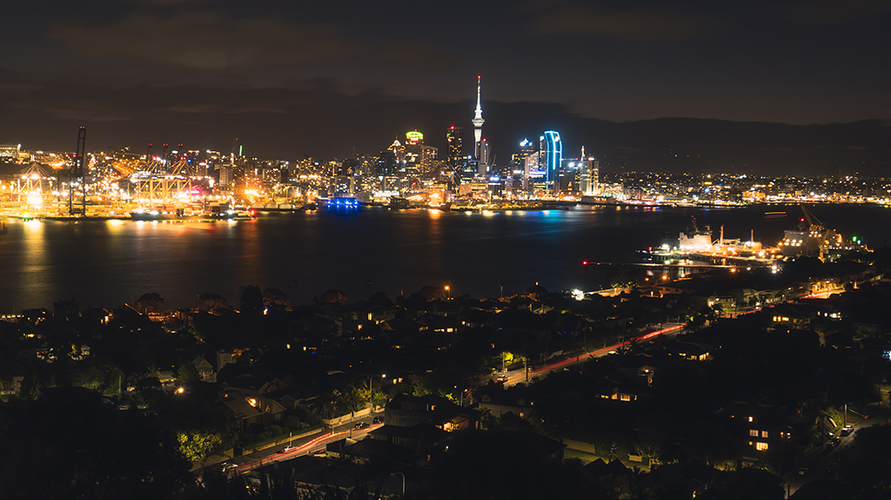
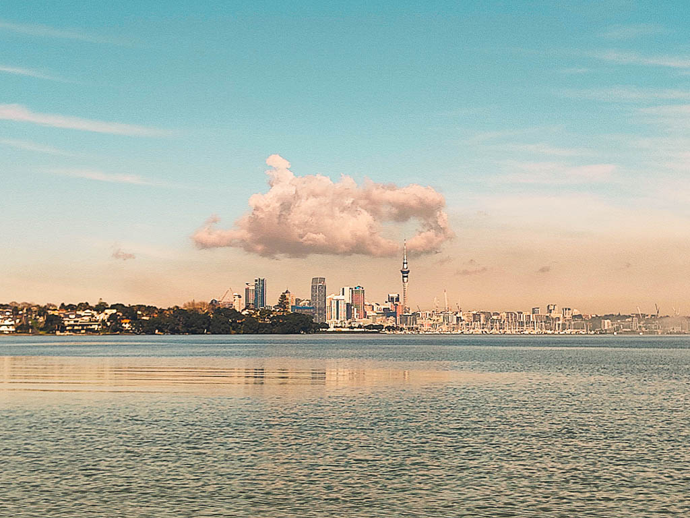

Auckland is a large metropolitan city in the North Island of New Zealand. The most populous urban area in the country and the fifth largest city in Oceania.
The city's significant tourist attractions include national historic sites, festivals, performing arts, sports activities, and a variety of cultural institutions, such as the Auckland War Memorial Museum, the Museum of Transport and Technology, and the Auckland Art Gallery Toi o Tāmaki. Its architectural landmarks include the Harbour Bridge, the Town Hall, the Ferry Building and the Sky Tower, which is both the tallest tower and the tallest building in the Southern Hemisphere. Despite being one of the most expensive cities in the world, Auckland is recognised as one of the world's most liveable cities, ranking third in the 2019 Mercer Quality of Living Survey and at first place in a 2021 ranking of the Global Liveability Ranking by The Economist.
Popular Auckland beaches and walking trails
You'll find the best of both worlds in Auckland, with beautiful rainforests, parks and beaches all so close to the city centre. The Waitakere Ranges Regional Park west of the city centre has more than 250 kilometres of walking and hiking tracks through lush native rainforest, past cascading waterfalls and along a magnificent coastline. Walk through the region's largest native forest in the Hunua Ranges or explore the striking landscapes of some of Auckland's 26 regional parks, such as Duder, Shakespear, Tapapakanga or Awhitu.
You're never far from the sea in Auckland. Bring your board to one of the black-sand surf beaches on the wild west coast - Karekare, Piha, Te Henga (Bethells), Muriwai and more. Head north to the expansive golden sands and clear waters of Tāwharanui and Pakiri. Closer to the city centre, and just a 15-minute drive from downtown Auckland, visit Mission Bay, Kohimarama or St Heliers. Enjoy a stroll along the promenade, hire a kayak or stand up paddleboard, and refuel with some fresh fish and chips by the seaside.
 Contact me
Contact me